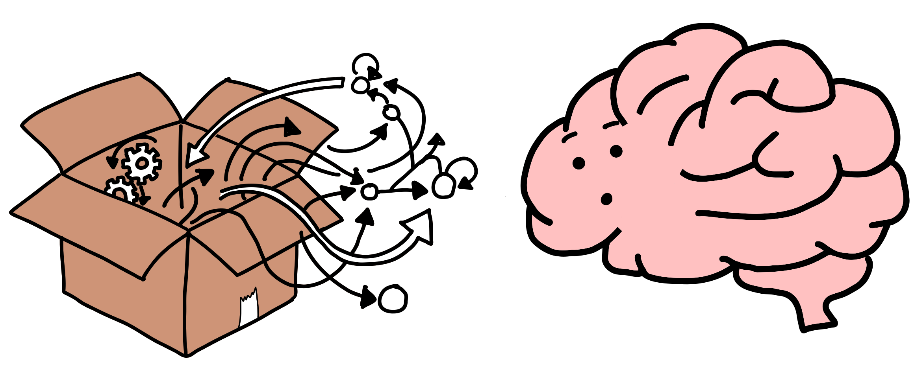
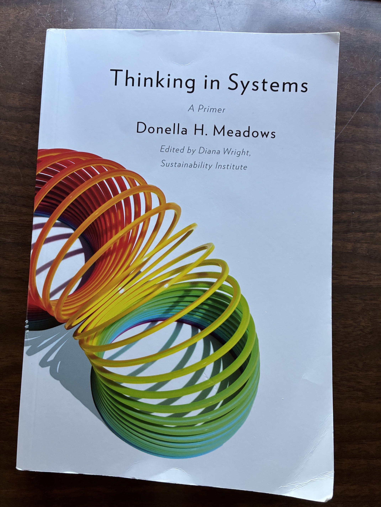

Why Your Systems Behave StrangelySystems Thinking for Software Architects

 |
Carl Chesser @che55er | che55er.io |
Thinking in Systems
Much of today's vocabulary and framing comes from Donella Meadows' Thinking in Systems.
We'll use its ideas to ask better architecture questions about behavior, feedback, and leverage.

What Is a System?
A set of elements or parts that is coherently organized and interconnected in a pattern or structure that produces a characteristic set of behaviors, often classified as its "function" or "purpose."
— Donella Meadows, Thinking in Systems
Fixed One Thing Broken Another
- Added database connections exhausted database memory
- Auto-scaled a service triggered a cascading outage
- Increased retries made an overloaded dependency worse
What Is Linear Thinking?
Linear thinking assumes a predictable chain of cause and effect: A B.
- One action has one primary result.
- More input produces roughly more output.
- Fix the broken component and the system is fixed.
What Is Non-Linear Thinking?
Non-linear thinking recognizes that systems rarely behave as simple chains of cause and effect.
Multiple things interact, effects can feed back into their causes, and a small change can sometimes produce a huge result, or almost no result.
Behavior of the whole system cannot always be predicted simply by adding up the behavior of its individual parts.
The "Root Cause" Trap
- Traditional Root Cause Analysis (RCA) looks for a single case.
- In complex systems, there is rarely a single root cause.
- Attributing outages to "human error" or "a bad deployment" stops learning.
- Systems View: The system structure allowed a routine event to trigger a failure.
System Anatomy: Stocks, Flows & Delays
- Stocks: What accumulates? Requests, queue messages, connections, memory, and cached data.
- Flows: What changes the stocks? Requests per second, message consumption, and processing throughput.
- Delays: How long before the system knows or reacts? Telemetry, network, queue, deployment, and human response time.
The Retry Storm
Each failure causes clients to retry. Those retries add additional load to an already struggling system, which causes more failures, which triggers even more retries.
Feedback Loops
Reinforcing loop
(amplifies)
A change amplifies itself, causing more change in the same direction.
Example: Money investment more money
The
more money you have, the more you can invest; successful investments give you more money to
invest.
Balancing loop
(stabilizes)
A change triggers a response that pushes the system back toward a goal or target.
Example:
Room temp
thermostat furnace
If the
room gets too cold, the thermostat turns on the furnace, which raises the temperature back
toward the set point.
Leverage Points
- Numbers: Constants and parameters such as subsidies, taxes, and standards.
- Buffers: The sizes of stablilizing stocks relative to their flows
- Stock and Flow Structures: Physical systems and their nodes of intersection.
- Delays: The lengths of time relative to the rates of system changes.
- Balancing Feedback Loops: The strength of the feedbacks relative to the impacts they are trying to correct.
- Reinforcing Feedback Loops: The strength of the gain of driving loops.
- Information Flows: The structure of who does and does not have access to information.
- Rules: Incentives, punishments, contraints.
- Self-Organization: The power to add, change, or evolve system structure.
- Goals: The purpose of the system.
- Paradigms: The mind-set out of which the system - it's goals, structure, rules, delays, parameters - arises.
- Transcending Paradigms
Leverage Points
10–12 (Tune )
Parameters, buffers, structure
7–9 (Control )
Delays and feedback loops
4–6 (Change )
Information, rules, self-organization
1–3 (Question )
Goals, paradigms, transcendence
Categorizing our leverage points as we look at examples of how we would apply them in our software systems.
Post-Incident Analysis: Climb the Ladder
- What happened? Event: checkout timed out.
- What pattern produced it? Timeouts happen during traffic spikes.
- What structure produced the pattern? Synchronous dependency + retries + no backpressure.
- What feedback loops were involved? Retry amplification + insufficient balancing.
- What intervention are we proposing? Parameter, buffer, feedback, information, rule, goal, or paradigm?
Architectural Takeaways
- Beware the Event Trap: Events are symptoms; structure generates behavior over time.
- Find the Loops: Ask what amplifies failure and what counteracts it.
- Find Stocks, Flows & Delays: What accumulates, moves, and waits?
- Climb the Leverage Ladder: Do not stop at parameters when the problem is structural.
- Question the Goal: Sometimes the highest-leverage change is changing what success means.
Good architecture does not just survive failure. It changes the dynamics that produce failure.
Appendix: Meadows' 12 Leverage Points
- #12 Constants, parameters, numbers
- #11 Sizes of buffers relative to flows
- #10 Structure of material stocks and flows
- #9 Lengths of delays relative to system change
- #8 Strength of negative feedback loops
- #7 Gain around driving positive feedback loops
- #6 Structure of information flows
- #5 Rules of the system
- #4 Power to add, change, evolve, or self-organize structure
- #3 Goals of the system
- #2 Mindset or paradigm
- #1 Power to transcend paradigms
Source: Donella Meadows, Leverage Points: Places to Intervene in a System.